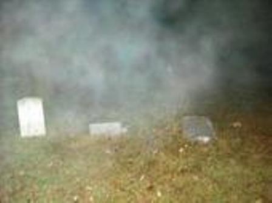

|
Click on any of the titles in the option box below to view the photo:
The Little Pennsylania Cemetery, AKA "Woolyburger" Cemetery, is located off the north side of London-Groveport Road, a little over a ½ mile west of Georgesville-Harrisburg Road, outside Darbydale, Ohio (Pleasant Township, Franklin County). The coordinates are 39° 51' 2.36" N, 83° 12' 5.24" W.
The Little Pennsylvania Cemetery is also known as London-Lancaster Cemetery. It sits at the end of a lane that is blocked off at London-Groveport Road by a large steel beam/gate. The township takes very good care of the grounds, but many of the gravestones have been very vandalized. It's always sad to see the gravestones in old cemeteries destroyed like the ones here.
Woolyburger Cemetery is supposedly haunted. There have been reports of strange lights seen around the cemetery. Several people also claim to have heard screams.
It is said that members of the occult come to this cemetery for their ceremonies and human/animal sacrifices. I guess there's an abandoned shack somewhere in the woods behind the cemetery, which is where most of the occult activites supposedly take place. I did notice a couple of very worn paths leading into the woods at the back corners of the cemetery. I didn't walk down them though, not because I was afraid of being sacrificed, but because it was just too humid and hot! A friend from work, Sean, told me that he and his friends used to walk back to the cemetery when they were in high school. However, they never went back there on Halloween, just in case the occult rumors were true!
I've heard that the cemetery got the name "Woolyburger" because a bigfoot-like creature called a woolybooger lives there. I didn't see any evidence of that, but it does remind me of a something I did once...the summer between my freshmen and sophomore years of high school I was a counselor at the beginner's 4-H camp. Fairfield County has their 4-H camp at Tar Hollow State Park in the Hocking Hills. I had a cabin of six nine year old girls for three nights. The camp was divided into different groups for competitions and stuff, and each group was comprised of two girl's cabins and two boy's cabins. I'm sure all of you can imagine how obnoxious a bunch of nine-year olds away from home can be, we had a difficult time getting them to follow some of the rules. One of the rules the kids had the most trouble with was staying on the paths to the cabins. We told them about the snakes, spiders, and other creatures living in the woods surrounding the paths, but they just didn't seem to care. So the other three counselors in my group and I decided to scare them by telling them a story about "woolyboogers". We didn't come up with the name woolybooger on our own. Each year the guy in charge of the camp would have a little skit in which someone would hide behind a wall and pull a brown wig attached to a string across the floor. One of the counselors would scream "Oh no, it's a woolybooger". I'm not sure what the purpose of the skit was, but we decided to use it to help keep the kids on the paths. In one of our group meetings we told the campers that woolyboogers are little furry creatures that live in the hills. They might not look too scary, but if you step off the path they'll release big, long, sharp claws (like Wolverine's from X-Men) and cut you with them. Telling them that seemed to do the trick, the kids were excellent at staying on the path after that! Our story did backfire on us a little though. One night, I think it was around 2AM, I woke up to screams in my cabin. Turns out one of the girls woke up when she heard some rustling in the trash bag...she was convinced that a woolybooger was in the cabin! It took me a LONG time to convince her that it wasn't a woolybooger, it was just a mouse! I guess it was probably mean for us to scare those poor little kids like that, but I'll admit that it was pretty fun! Anyway, now I'm rambling...
In June 2005, I received the following e-mail from Seth A., a website visitor:
I'm not completely sure if Woolyburger is actually haunted or not. However, I do believe that a cult does have meetings there. My aunt lives just down the street from it and she has told me she has seen dark figures entering or exiting the cemetery while driving past it late at night. I have been there once myself, and there was dried black candle wax on a few of the headstones. Also, my cousin's boyfriend told me that if you stand on top of the big hill in the cemetery on a full moon night and look down the hill across the small creek in the woods, an old, creepy house will appear there and if you walk to it and try to step onto the porch, it disappears.
In October 2006 I received an e-mail from Tina E. regarding the Little Pennsylvania Cemetery:
I have a friend, who is a firefighter, that went fishing behind the cemetery. It got late, and they got creeped out. It was after midnight and they decided to leave. He said that as they left through the cemetery, fog crept upon them - it was so thick they had to join hands to stay together. They all saw what they thought to be a old shed or old house, and being a little afraid they didn't check it out. The next day they came back and retraced their steps - the house, shed, or whatever it may have been was no longer there. I have always heard the legend of the old house appearing and disappearing, maybe they had that experience.
In October 2007 I received an e-mail from Jen C. regarding her trip to the Little Pennsylvania Cemetery:
I went last night...just after midnight (of course). There was another group of people that had already been in there. Nothing strange happened. A couple of the guys I was with kept freaking out, thinking they were seeing lights even after we knew the group of people that were previously in there were gone. One of them said it looked like someone was out there with a flashlight.
Once you get to the top, by the cemetery, there is an opening to a path off to the right of it. Walking to the top of the path IS kind of creepy, especially when you psych yourself out. I didn't go past the end of the path, that opens into ANOTHER area, where people say that everything starts happening (supposedly). The reason I didn't go any further is because two of the guys I was with said they saw a shadowy figure in the brush just 20 feet away from us. They thought they saw a flash of light, and they took off running.
My friend and I didn't really want to be alone, so we started walking back down. We heard the guys screaming at the end of the path, saying we were stuck. We ran back toward the cemetery, and both of them said there was a black car at the end with their lights off, and someone ran across the hill up to the cemetery from one side to the other, with flashlights. I personally didn't see anything paranormal or out of the normal. But then again, I didn't go past the end of the path where everything supposedly starts happening.
My friend went up through there during the day, got to the top of the path, and there was like four other paths on the other side of the opening, leading to other places. I've heard there's a pond or lake back there. He said he saw a log cabin, or something like that, on one of the paths. He said he went back later that week at night. Went down the same path and didn't see anything. Just a huge square area of dirt where the cabin used to be.
I personally didn't see any flashing lights or anything abnormal. I did hear a bunch of what I thought was coyotes. And a lot of leaves rustling around.
Figured I would give a little bit of what I saw and experienced. And on all nights, Halloween night.
I didn't see any cults either. The shadowy figures that people are seeing as they drive by are probably random kids wanting to scare themselves. Especially on Halloween.
In February 2008 I received the following e-mail from Jef P. regarding the cemetery:
Tonight myself and two friends were at Woolyburger and didn't see anything (though both my friends felt a strange "creeping feeling"). Well, although we didn't see anything while we were in Woolyburger, on our way out we noticed that our torch (a brand new 3 watt LED Maglight) didn't have the reach it did on the way in. We stood at the gate looking towards the drive, and though there was no fog (at all, none) my light shining towards the gate seemed to hit a wall of fog that would not allow us to see the gate. On the way in we looked back and clearly saw the gate, so we knew the light would reach. Thinking it was fog, I shined the torch to the right, left, and behind us, and the torch had normal reach...yet when we shined the light back towards the gate, it hit that "wall" again. Thinking it was odd, we continued our trip out and began to make our way back towards the gate. Upon reaching the gate, we all shared an odd feeling and turned towards Woolyburger once again. Shining the torch back up the hill, we found it hit the same wall of fog that we had just seen where we now stood. Only this time it was now at the other gate. Anyway, I thought it was odd. We're checking it out and planing a trip again soon. But I thought I would share this with you.
In April 2008 I received the following e-mail from an anonymous website visitor regarding the cemetery:
It was about 2 years ago now. My sister, two of our friends, and myself were driving home. It was around 10:00 PM and we were coming back from London. We were all joking and laughing about something one of our other friends had said. My sister was driving so she was paying close attention to the road. We were about a minute from the cemetery when my sister started screaming. We all were like what!! We almost had to pull off so someone else could drive, but she wouldn't let us. So we started asking what was wrong. We didn't get anything out of her till we got home. She said there was something standing on the side of the road. We all asked if it was a person, and she said no, it was a thing...it was a shadow like thing. I still to this day can't get much out of her about it, and she will not drive that road at night.
I received an e-mail about this cemetery from Angela A. in June 2008:
Hey there! I grew up in Grove City. My friends and I used to go to Woolyburger Cemetery all the time. I have taken many photographs of the cemetery. I think it is beautiful if you are standing in the entrance and you can see the clearing where there are the small hills in which the graves are. Many of the graves date from the 1800s, and some as early as the late 1700s. Sadly, a lot of the graves were those of babies and children as medical advances that save many lives today were not around then. Anyhow, I have been all over the woods around the cemetery and have not found much of interest other than the usual pretty forest stuff.
On to the haunted stuff. I have always felt an air of mystery there, nothing malicious, but that could just be because I have respect for the people who once lived and loved who are buried there. I have been through all of the paths that lead off from the cemetery. The path all the way back in the left corner leads to the pond. An enchanting pond nearly overgrown to the shoreline. I heard rumors back in high school that the pond had been used either one or as many as several times as a dumping spot for murdered people. I believe that once it was actually on the news, but I was very young. Also, yes, the mosquitos are horrible on that path and only worse by the pond!
The path to the right looks to be a path for large farm equipment. A friend and I walked it and got very bored (over an hour) and it ended in farmland. No cabin, no bridge, no occultists, who by the way get a bad rap as I have spent the last quarter at OSU taking a class on the subject.
There were two freaky things that happened to me there. One was while visiting with my then boyfriend and his younger brother. We were just hanging out, sitting on the biggest gravestones that we could climb atop of and a man and woman walked out of the woods. That would have been fine, they appeared normal enough, except for the part where their facial expressions mirrored those of the criminally insane! They looked not right, like MRDD or something, which normally I would not have a problem with, but how they smiled at us was really creepy. They were way too interested and happy for the normal passersby. We left when the younger brother freaked out.
The second freaky happening was while my best friend and I visited the cemetery. Everything was fine until we were leaving. That's when we were chased for over fifteen minutes by some crazy man-eating flying insect. Back in the days where you had to use a key to unlock the car door, we were at a disadvantage because everytime the bug let us close to my car we couldn't get the door unlocked before it tried to attack us again. That thing chased us into the street and back over and over, we screamed our heads off. There were several other cars parked a little ways down the road, guys fishing at Darby Creek, and I know they had to have heard us scream, and everyone in GC knows about the haunted cemetery. No one came to see if we were alright! Anyhow, we finally got into the car and drove off, my car overheated less than five minutes later and we stopped at a gas station for it to cool off. When we were there, we saw another one of those bugs in the window and asked some guy at a gas pump what it was. He said, "Well ma'am, that there's a horsefly." We realized then that we were total chickens, but hey, we have a great story...kind of.
I received an e-mail about the cemetery from Bruce P. in July 2008:
I stumbled across your site and saw the section on Woolyburger, A.K.A. Little Pennsylvania, Cemetery. I have been there many times, day and night, as I used to run a paranormal ghost hunting group from 1996-2005. The place has had its reputation since the 1980's, but I can attest that there is very little strangeness going on there anymore. I have traversed the entirety of the cemetery, including the branching paths that lead deeper into the woods. The small one on the back left of the cemetery leads to what is normally a pond, but during summer months it often dries up to more of a mudhole. The other, wider path on the right goes on seemingly forever and finally just stops at a very large overgrown field. I have never seen a shack or house, or anything else strange for that matter. I have discovered wax remains on headstones (as if left from an occult ceremony), but it is common knowledge that high school kids go in and burn those candles as a prank so other people will find it and be frightened. As for the larger path on the right, the farther back you get you will see many, many empty beer cans and shotgun shell casings which leads me to believe that this place is haunted by good-ole boys, not ghosts. I have always found the place very peaceful, even at night. I think that many of the locals play up the occult story to deter youngsters from entering into the cemetery since they often damage the headstones and grounds. Also, many locals like to fish the creek adjacent to the grounds in addition to apparently getting drunk and firing guns. Perhaps this is why they tell the story to deter kids from going in. As for the fog that everyone describes there at night, it is caused by the same creek. It can get very thick at night, which seems to creep people out quite a bit. Once when I had a small group there, the man who owns the adjacent property spotted us and confronted us before we made it all the way down the path and to the cemetery. After talking with him for several minutes, he realized that I wasn't a vandal (I had all of my equipment with me so he believed me when I told him we were there for research only). He was very rude at first, but once we convinced him that we were not hooligans he opened up a bit and pretty much told me that he chases off unwanted trespassers and that he usually tells the stories about the occult to scare off any troublemakers. As for weird lights at night, it is probably the fishermen as it would be very difficult to traverse the slope to the creek without a flashlight. Those are my experience there.
Also, I wanted to share this: the primary legend that I got from the locals was as follows (I include it because you did not mention it):
Supposedly, way back when that area was first settled, there was a wealthy man whose last name was (you guessed it) Woolyburger. He apparently bought the land where the cemetery was located and had his home built on it. Everything was fine until he suddenly stopped letting the locals visit their deceased family members in there and said that no one was allowed in the cemetery anymore. After a while, outraged locals snuck into the cemetery and discovered that many of the graves had been dug up and desecrated. Somehow they found out that Mr. Woolyburger was desecrating the corpses and dabbling in black magic, so they trapped him in his house and burned it to the ground. As is usually the case, I could find no facts to support this legend. My working theory was that his supposed house would have been located at the end of the wide, righthand path that exits the cemetery, but when we followed it to it's end, we found absolutely no evidence that a house was ever there (no foundation, no piping, and certainly not the granite slab pillar that supposedly still has Woolyburger written on it). Although similar to the "Willy Butcher" legend which concerns the same cemetery, I thought I would include this in case you have never heard this version.
I received an e-mail from William D. regarding this cemetery in October 2008:
As a child I used to visit this graveyard and the area around it, being a boy and looking for adventure. Here is a little more information. Starting with the drive (not path) that goes off to the right from the graveyard: if you follow it, shortly after it turns left and goes up the slight hill. There used to be a farm house about 30 feet from the road. Be careful in this area, due to there being an old basement in that area (I used to collect old beercans as a boy there). The House burnt down in the 1950's or 1960's. The land that was part of the farm was then donated to the National Guard, and in the summers during the 1970's, it was used for war games.
Now for the path that leads off from the back left of the cemetery. If you just follow it, there is a pond as some might call it back about 150 yards. This used to be a gravel quarry until it hit an Artesian well, which filled up the quarry. Over the years, many a teen went skinny dipping and drowned in there. Due to the well, some bodies have never been recovered. This is not a safe place for swimming.
The grounds around the cemetery were also very popular for hunting in the 1960's and 1970's. Due to this, there is a large rock that deer used to be field stripped on near the cemetery, and this has lead to the Woolyburger nickname. Most of the grounds now around the cemetery are now park land. The last graves to be added there were in the 1980's, and there are still two known families that have living decendants that visit here.
For example, Julina Holbert Dingus is my Great Grandmother (100% Cherokee Indian). Her son, Fredinan Dingus, Granddaughter, Mary Dingus, are all buried near that back path. Near Mary's grave are three other unmarked children's graves. All relatives. I believe they are Stephen Carl, Peggy Lynn, and Martin Duane Dingus. This might help anyone doing research on the unmarked graves.
I hope this is enlightening information that might help.
In April 2009, I received the following e-mail from anonymous website visitor:
The descriptions provided by others on your site are fairly accurate. The path at the top left hand side of the cemetery is quite steep at the beginning and leads to a small pond that is fed from the North and South ends by Artesian wells. The road at the bottom that turns to the right eventually leads to another pond off of Georgesville-Harrisburg Road, known locally as Cardossi's pond. This pond is difficult to see if you didn't know it is there, and the area around it is really overgrown now. The whole area is now owned by the state and is a Hunting and Fishing reserve.
During the early 1980's, there was a lot of reported occult activity in the cemetery. It was during this time period that both of my experiences occurred.
The first experience occurred when a small group of my friends and I were walking back from the pond after a few hours of fishing. On the way back, I looked down the embankment to the right, adjacent to Darby Creek, and noticed around a dozen animal skeletons scattered about. They appeared to be dog skeletons, but we were all freaked out and didn't stick around for a closer observation. We returned a week later, and strangely enough there was not a single bone to be found.
The second incident occurred a couple years later, when one of my friends and I were on the path heading to the pond early in the day. We both noticed a noise in the brush about 20 yards to the left of us that seemed to be following us. We would stop, and it would stop. When we resumed walking, it kept pace with us. We quickly ran to the top of the path, and it followed. Once we reached the graveyard and were on our way down to the gravel road, we both looked back and saw a black figure just at the edge of the graveyard, but still obscured by the brush. We then ran as fast as we could back to his car without looking back.
I have been back to the pond to fish in more recent years without incident. You can still drive by there around Halloween and see car loads of kids heading back to the cemetery.
In July 2009, I received the following e-mail from Matt M., a website visitor:
Just last night (July 2, 2009 around 11:00 PM) me and four others went out to Woolyburger for a good scare. I shared all the stories of what people saw back there, and the legends, so that if anyone did see anything like that they could point it out. I've never really been a believer, we went more just to scare ourselves with the stories. We figured we would go back there, be spooked out, and end up leaving saying it was a waste of time, but we were wrong.
As we walked down the drive with our flashlights, we were looking everywhere making sure we didn't see any figures anywhere. Once we got to the wooden fence, we shined the light all over the graveyard, making sure once again that no one was there. There was nothing in sight, so I asked them if they wanted to see the Boucher family tombstones. The girls didn't want to, but the guys did. So right as we were about to head over to them, we shined our light in that direction. In a split second, a piercing SNARL/SCREAM like demon or something satanic, or possibly even a person trying to make the nastiest, most horrific snarl I have ever heard. And it was sooooooo loud, like it was screamed right into our face. As soon as it hissed, every single person ran for their life...LITERALLY. I cannot explain how scary it was, all we could say was its real, the stories are fuckin actually real. And I swear on my own life that it was real, and I can still hear the snarl in my head and it makes me cry. When I was running, in my head all I remembered seeing/hearing besides the snarl was a figure dressed in black crouching by the grave where we heard the scream. Its face was an orange/pale color and pig-like. But it had a cloak. I figured it was just my brain playing tricks on me since I saw it so fast, but Kyle and Lizzie described the exact same thing before I told them about it as we sped off in our car.
I cannot explain what made that noise, but I know it was not an animal...100%, for a fact. Whether it was an occult member that we startled or someone playing a trick, I don't know. But there were no cars outside the cemetery, and we sat in front of it in the car for about 15 minutes before going in. We never saw any lights or candles back there. So whoever/whatever it was, it was waiting back there in the dark.
In October 2009, I received the following e-mail from Ryan D., a website visitor:
I have been to the graveyard numerous times myself and have experienced absolutely nothing at all. The last time I was there in fact I took a friend and my 5 year old son with me. On the way there, the friend had told me of a story that was on the news about an urban legend of a grave (could not say which one) that if you walk up to it even in the day light and then begin to walk away, you will in fact see a stuffed teddy bear appear on the grave and then disappear. Well, we go there and face the woods at the top of the hill just to the left of the "Marched with Sherman to the Sea" grave. Right in the corner was a grave that had a black stuffed little teddy bear sitting on it. It was just proof that individuals do in fact hear of the legends and tend to plant things to go along with the myths. I am 39 years old, and back in the early 80's especially during the "Satanic Panic" there were in fact numerous stories of satanist groups meeting there.
I think the strangest thing that ever happened to me/us, if you want to call it strange, is another time when we went there at night. Out on Route 665 by the steel guardrail across the entrance - if you go just down the road a few feet on the left there is an opening that a car can pull into just off of the road, and it is in fact invisible at night if you don't know it's actually there. Anyways, we went that night, and as we were leaving I see a car drive past us stop on 665 just down the road from where we were parked and back into this opening. When we drove past the opening, on the left when leaving I looked and the car was in fact sitting in the darkened opening off the side of 665 with its lights off so it saw when we went past. We waited about 15 minutes, turned around, and went the opposite direction towards Trapper John's...and wouldn't you know it, that same car was now parked on the other side of the road, right in front of the cemetery. The car's occupants were not in the car. Thinking this was strange that they actually hid until we left, then came over to ther other side and more than likely going into the graveyard, we drove down to a pay phone at Trapper John's and called the Sheriff. We waited about another 15 mintues and again drove back past 665 at the graveyard entrance. Two Sheriff cruisers where on each lane in the road on 665 with both cars' lights on. So apparently both deputies went up the path to find out what the hell was going on.
I actually hope someday I do in fact see something scary there, like an apparition, but the many times I have been there I am sorry to say it just seems like an old cemetery with no more activity in it other than the trees leaves rustling on the pathway!
In May 2010, I received the following e-mail from Sarah-Nicole, a website visitor:
My name is Sarah-Nicole, and I'm from Grove City. A bunch of my friends invited my friend Emilee and I to check out Woolyburger with them last night, and it being Emi and I's first time, I agreed. We took her Australian Shepherd, Bowie, thinking maybe he could sense something. We had a total of 8 people or so in our group.
When we arrived, there were 2 other cars parked outside and people leaving. Obviously they had the same idea as us. I tripped twice on the way up the hill. When we got to the top, we heard what sounded like hammers coming from under the bridge, and random lights in the woods. A strange fog appeared in the trees near the back and we heard what sounded like footsteps around us. At the risk of sounding cliche, an overwhelming feeling just came over me. My eyes kept watering, and my legs were shaking. Emilee and one of the other girls were scared to death, clutching on to each other even though they had just met 5 minutes prior. Finally, Emilee felt she had enough, so 4 of us headed back to the cars. On the way down, a rock slid out from under me, and I fell straight on my back, for the 3rd time.
As we passed the gate, Emilee realized she lost her keys. She and the other girl were too scared to head back and look, so we put them in the car, and told them if anything happened, to honk the horn until we came back. My friend, Brian, and I headed back to look, taking Bowie with us. The girls turned the car's headlights on, giving us more light only for us to realize we were standing in fog. The fog was only around our feet, nowhere else, just us. We walked, it followed, and then disappeared. Bowie would stop every couple of minutes and growl. It got to the point I was dragging him to make him move.
As we climbed a hill, we saw one of the other guys at the top, and screamed for him to come down and help us look. He came running down the hill, completely naked covering himself. That was probably the only positive part of the entire night. Why he did this, we have no idea, but it was great. After our laugh, we gathered up the rest and continued looking. Finally, I got a call from Emilee saying she found the keys. The peculiar part? They were off the path, almost in the woods. How they got from her pocket over there, we have no idea. The rest of the group took off towards the car, as Emilee honked the horn. Halfway down the path to the cars I had a panic attack. I don't know why, it just appeared out of nowhere. We all got back in the cars, and took off.
Emilee's preset radio stations and clock somehow reset itself. We can't explain how it happened. As we drove away, she lost all service until we reached her house 5 minutes away (even though she was able to call me 4 times with perfect service as we looked for her keys). Her phone shut off twice on the ride back and Bowie wouldn't settle down until we pulled into the driveway.
Overall - the entire night put most of us in a state of shock. I went to be made a believer, and Woolyburger successfully made me one.
In June 2010, I received the following e-mail from Shawn F., a website visitor:
Back in October of 2008, when we had the Indian summer couple weeks before Halloween, my girlfriend and I were at Woolyburger at about 3 AM. It was a clear night; full moon, no clouds, no fog, plainly clear. Well, our camera was dying the whole night. We took some photos and got lots of orbs, but towards the north side of the graveyard we took a photo of a orb. We went torwards it, took another photo, and it was gone. Then we turned around and took another photo of where we were just at, and we took a photo and some fog appeared. Also, the camera died. When we saw the photo the next day, it scared me a little, and I belive I have proof that it is really haunted.
Here is the photo that Shawn took:

In October 2010 I received the following e-mail from Erica J., a website visitor:
I wanted to share with you some of the experiences I have had at the cemetery. There is an e-mail posted on your website about a girl who saw "something" on the side of the road by the cemetery. Well, that girl is me. The story was shared with you by my sister. I have other experiences there also. I live in the area and have heard all the claims made that you could imagine. I have seen and experienced more than anyone would believe. Also, I would like to add that some of these experiences I have had took place before I ever knew that others have experienced them too. So I know that there is no possible way that my mind saw what it wanted by means of influence. I have been into the graveyard at all times of the day and night, I do not always see or "feel" anything unusual. Most of the time my visits are very relaxing and peaceful.
There is an apparition of a younger man that appears from time to time. He is tall, thin, and wears white. I never see him for more then a couple of seconds and he is gone, only to appear someplace else a few minutes later. He is never threatening or creepy, just feels observant or protective. I took my video camera with me once, and I could see him clearly with my own eyes but he never showed on the film. I thought that was kinda strange.
There are a lot of people going in and out of the graveyard all the time, so I doubt the stories about occult practitioners are true. I have explored the paths that are said to be involved. There are no sheds or evidence of anything related to those stories. Besides, if people actually studied religion more closely then they would know that not many religions even contain sacrifices! But that is not the subject we are talking about here. I have seen a lot of symbols written on graves and trees and the fence posts though.
The night that I saw "whatever it was" on the side of the road was scary! It was a shadowy figure that looked to be a young female. There is no way that it was just a human girl, it appeared so "other worldly." Kinda translucent and grayish, almost seemed to "float." Okay, I am getting cold chills now. I hate driving past there, especially at night! CREEPY!!!
A small group of my friends and I went to scope things out one night. As soon as we entered through the gates we started hearing low growl-like noises. And what seemed to be a figure moving beside us in the trees about 20 or 30 feet off the path. It was a new moon so we couldn't see much of anything, so we went back to the car to get the flashlights. Well, needless to say, we never saw or heard anything else after we busted out the lights.
I have had little rocks thrown at me out of nowhere, seen orbs in pictures, heard footsteps, and felt a strange feeling. Those things may or may not be paranormal, we may never discover the truth in all these strange events. But like I said, I have been there lots of times, probably close to 50, and I have only experienced on average about 6 or 8 "paranormal things." It is a wonderful and mysterious place to discover, and I hope to be able to share some more interesting facts that come about in the future with you.
In May 2011 I received the following e-mail from Jarred, a website visitor:
I have some facts and some experiences to share. First is when you go into the cemetery the path on the right used to be a road that connected the park behind the cemetery and park. While one of my uncles and his friend were back on that road in his truck they found a Chevy El Camino that was fairly new with no tags on it. They called the Franklin County Sheriff. The sheriff had told them that a few months earlier a body had been dug up and that the head was missing. My uncle was told by one of the Air Force vets when he was in the Air Force that the pond was used to test bombs for the Ait Force.
Another fact is when my dad and his friend (neighbor) drove by the cemetery at night right before midnight on their way from a friend's house in London in his 1976 mustang. When he drove on the bridge his headlights went out. After he got up to Harrisburg-Georgesville Road they came back on. Another family member of mine was driving past the cemetery around 3:00 in the morning to go home to her house on Grazel Road, AKA County Road 285. She saw a man holding a pipe in the middle of the road, so she blew her horn and then he disappeared. I am 14 years old and hunt in the cemetery during rabbit and squirrel season. We have seen a mist in the trees there. I also have family buried in the far left corner of the cemetery. There is going to be an investigation performed by ten people and a metro park ranger about the myths and stories. There is a story in the Grove City Record about it.
In October 2011 I received the following e-mail from Dylan, a website visitor:
Recently I saw your website and became interested in the Woolyburger because I live near it. I'd never been, so I decided to check it out. I went there early at 7 in the evening (I will return later in the night another day). I saw nothing unusual. I started to look at the gravestones and saw a five pointed star with OES on many of them. I also saw sisters of secrecy on many others. I went home and researched it and found out that it represents black magic, the goat of Mendes (no idea?), and satan. Just thought it was interesting and could confirm satanist meet there (or used to at least) and live nearby.
I just want to mention that OES is the Order of the Eastern Star, the female auxiliary to the Masons. This is not a Satanist group.
In December 2011 I received the following e-mail from Mark N. about his experiences at the cemetery:
I wanted to write you a submission about the Little Pennsylvania Cemetery, or as most know it, Woolyburgers. I grew up in Grove City my whole life, so tales of this place are a dime a dozen, but there is truly something paranormal about this place. I went up there only once, and it was when I was about 16 years old. I went up with my brother-in-law, cousin, and a friend. We were loaded for bear, we all had flashlights, two of us were carrying baseball bats, and my brother-in-law was carrying a video recorder. As we made our trip up the path to the cemetery all of our equipment was in proper and working order. Camcorder was recording and all the flashlights were shining bright. Once we reached the main gate to the cemetery that changed. All the flashlights shut off and the the camcorder, even though it was still powered on, was not displaying any video feedback whatsoever. The whole screen went black. By that time we were all pretty well spooked, but decided to venture on. Once we stepped through the gate, a dense fog appeared at our feet that was not there before. Along with the fog came a passing chill that unfortunately wasn't the wind because the wind was dead, everything was creepily calm. Once we got back in the cemetery a bit our flashlights kicked back on, but only to our surprise didn't really illuminate anything. The whole time we were in there, there would be random spurts of light that would show up in the trees. Also, we are all heard a distant whistle that sounded like someone whistling a tune but none of us were doing it. Suprisingly, we were the only car that was parked anywhere near that place when we went up. Woolyburgers has a lot of tall tales about it, but it definitely has a special paranormal attribute to it.
In December 2011 I received the following e-mail from an anonymous website visitor:
A group of friends, there were 7 of us, had taken a trip to Woolyburger December 26, 2011 after a night of hanging out. We came up with the idea while sitting at a restaurant on Stringtown Road. I myself had never heard of it before we went, but we got there and broke off into pairs. The one other person ran off in front of us. I've never had a paranormal experience, but I am just really jumpy. So we were there about an hour and a half and walked off the trail a few times and ended up in this open field. It was partially frozen, but at one point we were having to hold hands and walk on dirt mounds because the puddles got to over a foot deep. I'm not sure if that is where the pond is, but we were sinking until we got to a tree and turned around. But when we walked back, the same way, the puddles seemed to have disappeared. We stayed in our pairs as the one person held a flash light in front, but a friend and I were in the back and he kept turning around. And I heard someone following, but I was too afraid, but at one point he whispered to me, "Walk faster, this is creeping me out." So we get out of the graveyard, and are walking over the bridge to where our car is parked, the little area off to the left. But as we are walking we saw lights by the car and everyone kept freaking out. We saw a lot of fog on the sides of the river and behind us, but none in front. And it wasn't a bad feeling, but more of a "you need to leave" feeling. We are going to make a trip back when it isn't so cold and there isn't a new moon. But that's my story.
Here are some additional links to pages about the cemetery:
Forgotten Ohio - Woollyburger Cemetery
Franklin County Cemeteries - Little Pennsylvania Cemetery
Where do you want to go? Select your destination:
|